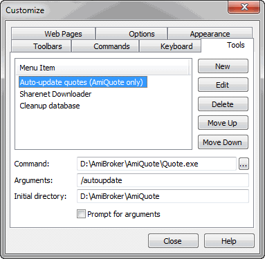

This dialog allows you to customize the User Interface. It can be invoked from the Tools->Customize menu.
In the "Tools" tab, you define custom tool menu items:

You can launch executable files (.exe), script files (.js, .vbs), web pages (.html), and any other registered file types from the tools menu. To add a new tool, you should open this dialog and click the "New" button. Then, enter the tool name, command (by hand or using the file dialog), optional arguments, and the initial directory. If you check the "Prompt for arguments" checkbox, AmiBroker will ask for the program's arguments each time.
Version 5.60 brings a new #import command that allows importing ASCII files from a local disk or even from remote (web) sources.
In the Tools->Customize, "Tools" page, you
can now define a custom tool that uses the new #import command
Command: #import
Arguments: URL to download data from.
Initial dir: path to the format definition file.
This functionality is used by the "Update US symbol list and categories" tool.
Other tabs provide UI customization features described in the Customize UI tutorial section.
Keyboard tab
The keyboard tab allows you to define your own keyboard shortcuts.
To assign a shortcut key
On the Tools menu, click Customize, and then click the Keyboard tab.
In the Categories list, select the menu that contains the command to which you want to assign the shortcut key.
In the Commands list, select the command to which you want to assign the shortcut key.
Put the cursor in the Press New Shortcut Key box, press the shortcut key or
key combination that you want, and click Assign.
If you press a key or key combination that is invalid, no key is displayed.
You cannot assign key combinations with ESC, F1, or combinations such as CTRL+ALT+DEL
that are already in use by your operating system.
If you press a key or key combination that is currently assigned to another command and press "Assign", an error message will appear giving you the choice to either cancel or re-assign the key shortcut to a new command.
To delete a shortcut key
On the Tools menu, click Customize, and then click the Keyboard tab.
In the Categories and Commands lists, select the location for the shortcut key you want to delete.
In the Current Keys list, select the shortcut key you want to delete and click Remove.
To reset all shortcut keys to their default values
On the Tools menu, click Customize, and then click the Keyboard tab.
Click Reset All.